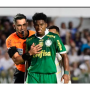

Tem, para o Palmeiras. A equipe de Abel Braga viaja para a Argentina para estrear na Conmebol Libertadores. Na quarta, às 21h30 ,o time encara o San Lorenzo. O Santos terá a semana livre para se preparar para a partida de volta de final do Paulistão.
Num jogo aberto, o Santos bateu o Palmeiras por 1 a 0 neste domingo e saiu na frente na decisão do Campeonato Paulista. Ao lado de seu torcedor, na Vila Belmiro, a equipe alvinegra construiu a vantagem mínima no jogo de ida com um gol de cabeça de Otero no começo do segundo tempo. Foi a primeira derrota do time de Abel Ferreira no Paulista, que pelo terceiro ano seguido sai atrás na decisão - nos dois últimos, conseguiu virar..